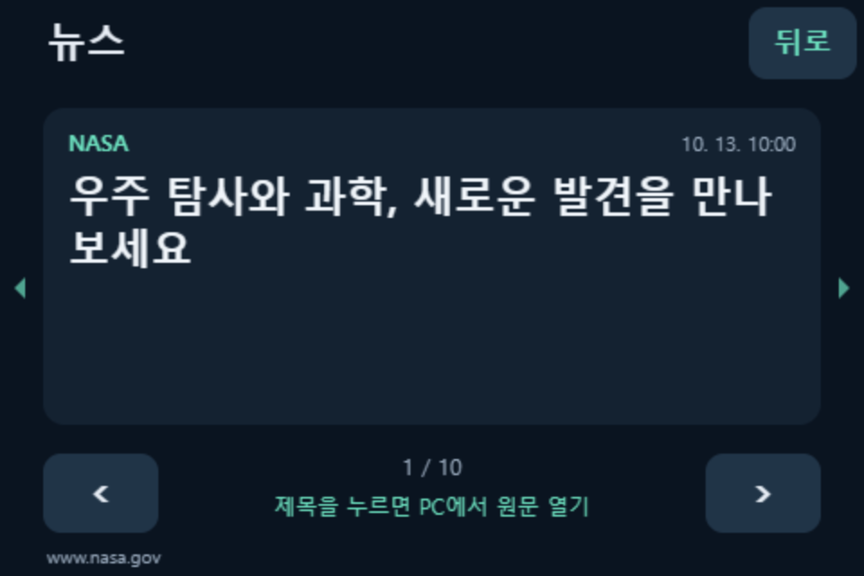
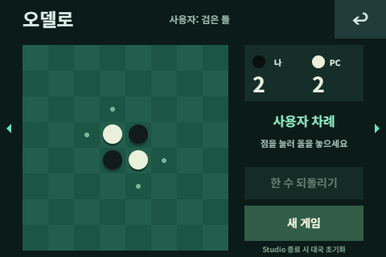
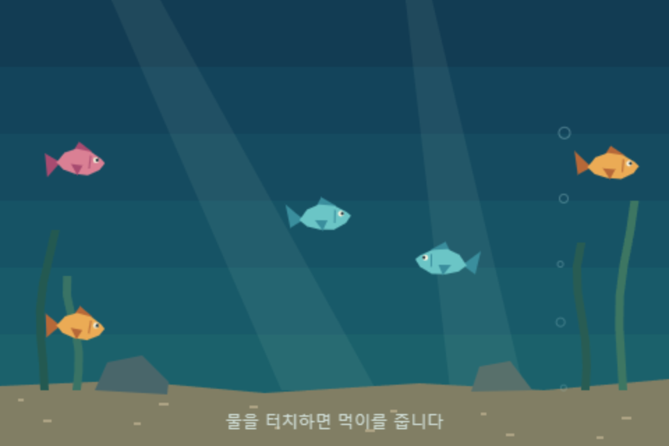

다양한 시계
디지털·아날로그·플립 시계로 시간을 확인하세요.
Baroham / Widgets
Studio에 준비된 기본 위젯부터 사용하고, 원하는 위젯을 더해 보세요.
Already in Studio
별도 다운로드 없이 전체화면 위젯 목록에서 선택하세요.
디지털·아날로그·플립 시계로 시간을 확인하세요.
놀이터와 점프 게임에서 고양이와 쉬어 가세요.
재생을 조작하고 PC의 주요 상태를 살펴보세요.
Android에 저장한 MP4를 반복 재생합니다. Studio 0.9.26+ · Android 앱 0.5.43+ 권장.
Add to your collection
추가 위젯은 무료 ZIP으로 제공합니다. 각 위젯의 최소 Studio 버전을 확인하고 설치하세요.

관심 있는 코인의 현재가와 전일 대비 등락률을 한 화면에서 확인하세요. 업비트 원화마켓의 코인을 골라 나만의 시세 화면을 만들 수 있습니다.
Studio 0.9.6+ · 인터넷 필요

RSS·Atom 뉴스 제목과 출처를 확인하고, 제목을 눌러 PC에서 원문을 여세요. 기본 NASA 영문 뉴스 외에 원하는 공개 피드를 추가할 수 있습니다.
Studio 0.9.6+ · 인터넷 필요
Studio 0.9.31 사용을 권장합니다. ZIP 업데이트는 기존 피드 설정을 유지합니다.

검은 돌과 흰 돌을 뒤집으며 즐기는 작은 보드게임입니다. 컴퓨터와 대결하거나 같은 화면에서 두 사람이 번갈아 플레이하세요.
Studio 0.8.26+ · 인터넷 불필요

장작 위로 흔들리는 불꽃과 날아오르는 불씨를 바라보며 잠깐 쉬어 가세요.
Studio 0.9.11+ · 인터넷 불필요
소리 없이 동작하며 Studio 연결이 필요합니다.

물고기와 수초가 움직이는 작은 어항입니다. 물속을 터치하면 물고기가 먹이를 따라옵니다.
Studio 0.9.11+ · 인터넷 불필요
소리 없이 동작하며 Studio 연결이 필요합니다.
좋아하는 사진을 책상 위 작은 액자로 띄워 보세요. 사진 폴더를 추가하면 하위 폴더까지 찾아 순서대로 또는 무작위로 보여줍니다.
Studio 0.9.40+ · 인터넷 불필요
먼저 Studio 0.9.40 이상으로 업데이트하세요. 기존 폴더와 재생 설정은 유지합니다.
Install & update
원하는 위젯을 내려받으세요. 압축을 풀 필요가 없습니다.
Studio의 전체화면 → 위젯 관리 목록에 ZIP을 놓고, 필요한 연결 권한을 확인하여 추가하세요.
사용을 켜고 순서·사용 여부 저장을 누르세요. 개별 옵션은 위젯 설정에서 조정합니다.
추가 위젯은 PC의 Studio에서 실행되어 가상 바로함·Android·지원 ESP32 화면에 표시됩니다. 기기에는 따로 설치하지 않습니다. 모닥불·어항 ZIP에는 MIT 라이선스와 원저작자 고지를 포함합니다.
처음이신가요? 시작하기 →